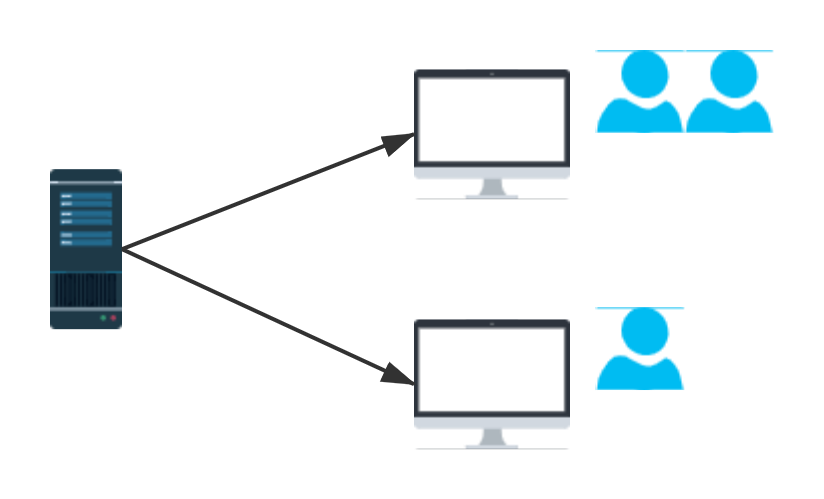

分布式系统从理论到实战系列
《分布式系统从理论到实战系列》是我写的第三个专栏，也将会是涵盖面最广、知识点最复杂的一个专栏。我一直在思考怎样才能将分布式相关的知识系统化的阐述出来，网络上有很多关于分布式的文章、视频、书籍，但要么过于零散，要么泛泛而谈，很少看到有能系统、全面、深入浅出的阐述和归纳实际工作中用的各种分布式知识和框架的系列文章。
虽然分布式涉及的东西确实非常庞杂，但我认为还是可以系统的通过文章由面到点的阐述出来的，因为我们工作中用到的分布式技术其实就那么几种，剩下的就是在实战中积累经验，坑踩得多了，经验才会丰富。我写这个系列的过程本身也是一个不断自我学习、总结归纳的过程，每个知识点和每个框架的介绍都参考了非常多的文章、书籍，也感谢前人的总结归纳，我后面也会列出我认为一些比较好的书籍供读者参考。
整个系列包含三部分：理论篇、进阶篇、实战篇。我们先从最基本的“什么是分布式系统？”开始。
一、简介
分布式系统（Distributed System），对于很多刚接触的同学来说，听到这个词就会感到畏惧，仿佛觉得这是一类很高深的理论或技术。其实不然，分布式理论本身固然很晦涩，但经过几十年的发展，在工业环境应用中已经较为成熟。
许多分布式框架为使用者屏蔽了复杂的底层细节，我们要做的就是掌握基本的分布式理论，然后对各类分布式框架的特性和适用场景有全局性的了解，最后结合应用实际落地的场景，选择适合自己的框架，在应用中逐步去了解框架细节，切勿为了学习而学习，死钻牛角尖。所以，学习分布式技术的诀窍无他，唯熟尔。
何谓分布式系统？
分布式系统是由集中式系统演化来的，所以在谈分布式系统之前，不妨先来看下传统的集中式系统。
所谓集中式系统，就是把所有的程序、功能都集中到一台主机上，从而往外提供服务的单体应用。集中式系统的优点是便于维护、操作简单。
但这样的系统也有缺陷，不出问题还好，一出问题，就容易造成单点故障，所有功能就都不能正常工作了。另外，集中式系统的性能瓶颈就是单机性能的上限，横向扩展比较困难。

为了解决集中式系统存在的缺陷问题，分布式系统诞生并逐渐演化。关于分布式系统的定义有很多，这里引用《分布式系统原理和范型》中的定义：
分布式系统是若干独立计算机的集合，这些计算机对于用户来说就像是单个相关系统。
说的再直白点，分布式系统就是一组通过网络进行通信、为了完成共同任务而协调工作的计算机节点（Node）组成的系统。系统中的各个节点对于用户是透明的，用户感知不到背后的逻辑，就像访问单个计算机一样。

分布式系统的目标就是要解决集中式系统的各种缺陷，实现整个系统的高性能、高可用、可扩展（“高性能、高可用、可扩展”，请默读三遍，非常重要，所有分布式框架的核心原理都围绕这三点展开）。但是，要实现这三个目标并不容易，因为将系统从集中式拆分成分布式，会遇到各种各样的问题，比如数据的一致性、节点间通信方式、节点宕机问题等等。于是为了解决这些问题，诞生出很多分布式基本理论，比如CAP、一致性哈希、BASE等等。
二、理论篇
分布式理论是分布式系统能够实现高性能、高可用、可扩展这三个主要目标的基础。
本部分从应用拆分为分布式后遇到的问题出发，介绍解决这些问题背后所依赖的分布式理论，为后续学习高性能、高可用、可扩展打下基础。
理论篇参考资料：
本部分包含以下文章：
- 分布式理论之分布式一致性（1）：CAP理论
- 分布式理论之分布式一致性（2）：BASE理论
- 分布式理论之分布式一致性（3）：共识问题
- 分布式理论之分布式一致性（4）：Paxos算法
- 分布式理论之分布式一致性（5）：Raft算法原理
- 分布式理论之分布式一致性（6）：Gossip协议
- 分布式理论之分布式一致性（7）：Quorum NWR算法
- 分布式理论之分布式一致性（8）：PBFT算法
- 分布式理论之分布式一致性（9）：PoW算法
- 分布式理论之分布式一致性（10）：ZAB协议
- 分布式理论之分布式事务（11）：2PC
- 分布式理论之分布式事务（12）：3PC
- 分布式理论之分布式事务（13）：TCC
- 分布式理论之分布式事务（14）：可靠消息最终一致性方案
- 分布式理论之可扩展（15）：一致性Hash
- 分布式理论之可扩展（16）：Range Based
- 分布式理论之可扩展（17）：全局流水号
- 分布式理论之可扩展（18）：服务化拆分
- 分布式理论之高可用（19）：Master-Slave
- 分布式理论之高可用（20）：集群
- 分布式理论之高可用（21）：降级、熔断、限流
- 分布式理论之高性能（22）：读写分离
- 分布式理论之高性能（23）：分库分表
- 分布式理论之高性能（24）：分布式缓存
- 分布式理论之高性能（25）：负载均衡
三、进阶篇
进阶篇和理论篇相辅相成，在进阶篇中，我们会以一些分布式框架为示例，依然会从高性能、可扩展、高可用三个维度出发讲解分布式理论的落地，以及在运用这些框架时的一些核心关注问题。
我们从一次客户端请求出发，看看整个请求链路中可能涉及的各类主流分布式框架：

从功能角度来分类，目前主流的各种分布式框架如下：
负载均衡
Nginx：高性能的反向代理服务器，功能还包括负载均衡、静态内容缓存、访问控制等；
LVS：Linux virtual server，基于集群技术和Linux操作系统实现一个高性能、高可用的服务器。webserver
web容器：Tomcat，WebLogic，JBoss，Jetty等service
服务层应用框架：SOA、微服务（Spring Cloud系列）、spring boot等容器技术
DevOps的各类工具：Docker，Kubernetes等分布式缓存
Redis，MemCache等分布式协调框架
ZooKeeper、etcd等分布式RPC框架
dubbo：dubbo是阿里开源的Java语言开发的高性能RPC框架分布式消息中间件
Kafka：Apache下的一个子项目，使用scala实现的一个高性能分布式Publish/Subscribe消息队列系统，主要应用场景是日志收集和流式处理；
RabbitMQ：使用Erlang编写的一个开源的消息队列，本身支持很多的协议：AMQP，XMPP, SMTP,STOMP；
RocketMQ：阿里系下开源的一款分布式、队列模型的消息中间件；
ActiveMQ：Apache下的一个子项目。使用Java完全支持JMS1.1和J2EE 1.4规范的 JMS Provider实现。分布式实时计算框架
Storm：Twitter开源的分布式实时大数据处理框架，从0.9.1版本之后，归于Apache社区，被业界称为实时版Hadoop；
Flink：用于对无界和有界数据流进行有状态计算，Flink设计为在所有常见的集群环境中运行，以内存速度和任何规模执行计算。分布式离线计算框架
Hadoop：Hadoop适合处理离线的静态的大数据；
Spark：Spark适合处理离线的流式的大数据。数据库中间件
MyCat：脱胎于阿里cobar；
Sharding-JDBC：定位为轻量Java框架，使用客户端直连数据库，以jar包形式提供服务。数据库
传统关系型数据库：mysql、oracle等；
MongoDB：是一个高性能、分布式、文档性的NoSQL数据库，基于C++开发；
HBase：一个分布式的、面向列的开源数据库。搜索
ElasticSearch：一个基于Lucene的搜索框架，提供了一个分布式多用户能力的全文搜索引擎，基于RESTful web接口；
Solr：与ES类似的全文搜索引擎，拥有更大、更成熟的用户、开发和贡献者社区。日志采集
ELK：elastic公司提供的一套完整的日志收集以及展示的解决方案，是三个产品的首字母缩写，分别是ElasticSearch、Logstash 和 Kibana；
Flume：Cloudera公司产出的分布式日志收集框架。
进阶篇中，我不会具体去讲某个分布式框架怎么使用，但是会罗列出一些比较好的书籍供读者参考。后续如有需要，也会针对某些分布式框架做一个专栏讲解，比如分布式MQ。
本部分包含以下文章：
- 分布式框架之高性能（1）：消息队列
- 分布式框架之高性能（2）：消息队列的可用性
- 分布式框架之高性能（3）：消费的幂等性
- 分布式框架之高性能（4）：消息丢失
- 分布式框架之高性能（5）：消息有序性
- 分布式框架之高性能（6）：消息积压
- 分布式框架之高性能（7）：分布式搜索引擎
- 分布式框架之高性能（8）：ElasticSearch架构
- 分布式框架之高性能（9）：ElasticSearch数据持久化
- 分布式框架之高性能（10）：Redis线程模型
- 分布式框架之高性能（11）：Redis内存管理
- 分布式框架之高性能（12）：Redis数据持久化
- 分布式框架之高性能（13）：Redis复制
- 分布式框架之高性能（14）：Redis哨兵模式
- 分布式框架之高性能（15）：Redis集群模式
- 分布式框架之高性能（16）：Redis分布式锁
- 分布式框架之可扩展（17）：Dubbo基本原理
- 分布式框架之可扩展（18）：Dubbo的SPI机制
- 分布式框架之可扩展（19）：Spring Cloud
- 分布式框架之可扩展（20）：Eureka注册中心
- 分布式框架之可扩展（21）：API网关
- 分布式框架之可扩展（22）：Zookeeper
- 分布式框架之可扩展（23）：Zookeeper分布式锁
- 分布式框架之可扩展（24）：分布式Session
- 分布式框架之高可用（25）：Hystrix简介
- 分布式框架之高可用（26）：Hystrix资源隔离
- 分布式框架之高可用（27）：Hystrix请求流程
- 分布式框架之高可用（28）：Hystrix降级
- 分布式框架之高可用（29）：Hystrix熔断
四、实战篇
实战篇部分，我们会以一个真实的线上系统为案例，从零开始搭建，期间运用理论篇和进阶篇中涉及的各种分布式框架和理论，逐步完善我们的应用，以掌握各种分布式框架的组合应用。
本部分包含以下文章：
- 分布式系统实战（1）：系统整体架构
- 分布式系统实战（2）：系统环境搭建
- 分布式系统实战（3）：Redis持久化实战
- 分布式系统实战（4）：Redis企业级灾备方案
- 分布式系统实战（5）：Redis读写分离实战
- 分布式系统实战（6）：Redis哨兵部署实战
- 分布式系统实战（7）：Redis集群模式实战
TO BE CONTINUED...后续文章仅在公众号发布